측량기능사 (2013-01-27 기출문제)
1과목: 임의 구분
1. 다음 중 평판측량의 방사법에서 측점 간의 지상 거리로 가장 적당한 것은?
- 50~60m
- 200~250m
- 500~600m
- 1~2km
(정답률: 70%)

2. 평판측량에 대한 설명으로 옳지 않은 것은?
- 현장에서 직접 대상물의 위치를 관측하여 축척에 맞게 평면도를 그리는 측량이다.
- 대단위 지역의 지형도 측량에 많이 사용한다.
- 복잡한 지형이나 시가지, 농지 등의 세부 측량에 이용할 수 있다.
- 현장에서 측량이 잘못된 곳을 발견하기 쉽다.
(정답률: 59%)
3. 어느 측점에서 20.5km 떨어진 두 지점의 점간 거리가 2.⑤m일 때, 두 점 사이의 각은?(오류 신고가 접수된 문제입니다. 반드시 정답과 해설을 확인하시기 바랍니다.)
- 7.81“
- 10.31“
- 15.62“
- 20.63“
(정답률: 45%)
4. 기준점 측량에 관련이 가장 먼 것은?
- 위도 결정
- 고저 측량
- 정지 측위(static GPS)
- 도면 작성
(정답률: 69%)
5. 서로 이웃하는 두 개의 측선이 만나 이루는 각을 무엇이라 하는가?
- 교각
- 복각
- 배각
- 방향각
(정답률: 90%)
6. 두 점 간의 거리를 측정하니 최확값이 100m이고 평균제곱근오차가 각각 4mm이었다면 정밀도는?
- 1/1000
- 1/2000
- 1/25000
- 1/50000
(정답률: 66%)
7. 교호 수준 측량에 대한 설명 중 옳은 것은?
- 두 점 간의 연직각과 수평거리도 삼각법에 의해 구한다.
- 넓은 하천 또는 계곡을 건너서 있는 두 점 사이의 고저차를 구한다.
- 스타디아법으로 고저차를 구한다.
- 기압차로 고저차를 구한다.
(정답률: 86%)
8. 삼각수준측량에서 A, B 두 점간의 거리가 10km이고 굴절 계수가 0.14일 때 양차는? (단, 지구 반지름 = 6370km 이다.)
- 4.32m
- 5.38m
- 6.75m
- 7.⑤m
(정답률: 23%)
9. 트래버스 측량의 순서로 가장 적합한 것은?
- 계획 및 답사 - 표지 설치 - 관측 - 선점 - 계산
- 선점 - 계획 및 답사 - 관측 - 표지 설치 - 계산
- 선점 - 계획 및 답사 - 표지 설치 - 관측 - 계산
- 계획 및 답사 - 선점 - 표지 설치 - 관측 - 계산
(정답률: 78%)
10. 트래버스 측량의 폐합오차 조정에 대한 설명 중 옳은 것은?
- 컴퍼스법칙은 각관측의 정확도가 거리관측의 정확도 보다 좋은 경우에 사용된다.
- 트랜싯법칙은 각관측과 거리관측의 정밀도가 서로 비슷한 경우에 사용된다.
- 컴퍼스법칙은 폐합오차를 각 측선의 길이의 크기에 반비례하여 배분한다.
- 트랜싯법칙은 위거 및 경거의 폐합오차를 각 측선의 위거 및 경거의 크기에 비례 배분하여 조정하는 방법이다.
(정답률: 65%)
11. 트래버스 측량의 설명으로 옳지 않은 것은?
- 트래버스측량은 측선의 거리와 그 측선들이 만나서 이루는 수평각을 측정하여 각 측선의 위거와 경거를 계산하고 각 측점의 좌표를 구한다.
- 개방트래버스측량은 종점이 시점으로 돌아오지 않는 형태의 측량으로 높은 정확도를 요구하는 측량에는 사용되지 않는다.
- 폐합트래버스측량은 종점이 시점으로 되돌아와 합치하여 하나의 다각형을 형성하는 측량으로 트래버스 측량중에 정확도가 가장 높다.
- 결합트래버스측량은 기지점에서 출발하여 다른 기지점으로 연결하는 측량으로 높은 정확도를 요구하는 대규모 지역의 측량에 이용된다.
(정답률: 68%)
12. 방위각 180° 에서 270°는 몇 상한에 해당 되는가?
- 제1상한
- 제2상한
- 제3상한
- 제4상한
(정답률: 85%)
13. 측선 AB의 거리가 87.61m이고, 방위각이 219° 40‘ 38“ 일 때 이 측선의 위거는?
- 67.429m
- 55.936m
- -55.936m
- -67.429m
(정답률: 63%)
14. 다음 각의 종류에 대한 설명이 옳지 않은 것은?
- 방향각 : 임의의 기준선으로부터 어는 측선까지 시계방향으로 잰 수평각
- 방위각 : 자오선을 기준으로 하여 어는 측선까지 시계방향으로 잰 수평각
- 고저각 : 수평선을 기준으로 목표에 대한 시준선과 이루는 각
- 천정각 : 수평선을 기준으로 90°까지를 잰 시준각
(정답률: 72%)
15. 각 관측 방법에 대한 설명으로 옳지 않은 것은?
- 조합각 관측법은 관측할 여러 개의 방향선 사이의 각을 차례로 방향각법으로 관측하여 최소제곱법에 의하여 각각의 최확값을 구한다.
- 단측법은 높은 정확도를 요구하지 않을 경우에 사용하며 정ㆍ반위 관측하여 평균을 한다.
- 배각법은 반복 관측으로 한 측점에서 한 개의 각을 높은 정밀도로 측정할 때 사용한다.
- 방향각법은 수평각 관측법 중 가장 정확한 값을 얻을 수 있는 방법으로 1등 삼각측량에서 주로 이용된다.
(정답률: 72%)
16. 다음 중 거리 측량을 실시 할 수 없는 측량장비는?
- 토탈스테이션(Total station)
- 레이저레벨
- VLBI
- GPS
(정답률: 67%)
17. 그림에서 ∠A 관측값의 오차 조정량으로 옳은 것은? (단, 동일조건에서 ∠A, ∠B, ∠C와 전체 각을 관측하였다.)
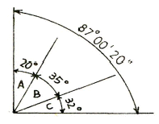
- +5“
- +6“
- +8“
- +10“
(정답률: 60%)
18. 20m 강철 테이프를 사용하여 2000m를 측정하였다. 이때 예상되는 오차는? (단, 이 테이프는 20m에 ±3mm의 오차가 생긴다.)
- ±25mm
- ±30mm
- ±35mm
- ±45mm
(정답률: 60%)
19. 관측자의 부주의로 인하여 발생하는 오차는?
- 착오
- 부정 오차
- 우연 오차
- 정오차
(정답률: 89%)
20. 수준점을 가장 올바르게 설명한 것은?
- 어떤 점에서 중력방향에 직각인 점
- 어떤 점에서 지구의 중심방향에 수직인 점
- 어떤 면상의 각점에서 중력의 방향에 수직한 곡면
- 기준면에서부터 어떤 점까지의 연직거리를 정확히 측정하여 표시한 점
(정답률: 67%)
2과목: 임의 구분
21. 수준측량시 시준할 때에 발생되는 오차(시준 오차)에 대한 설명으로 옳지 않은 것은?
- 시준할 순간에 기포가 중앙에 없을 때
- 조준이 완전하지 못할 때
- 기계의 조정이 잘 안되었을 때
- 표척이 침하되었거나 혹은 경사지게 세웠을 때
(정답률: 41%)
22. 삼변을 측정하여 값 a, b, c를 구했다. a변의 대응각 A를 반각공식으로 구하려 할 때 sin A/2의 값은? (단,
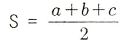
)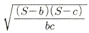
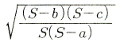
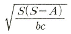
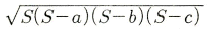
(정답률: 44%)
23. 삼각점의 선점시 주의사항으로 옳지 않은 것은?
- 측점수가 적고 세부측량 등에 이용가치가 큰 점이어야 한다.
- 삼각형은 될 수 있는 대로 정삼각형으로 한다.
- 지반이 견고하고 이동, 침하 및 동결 지반은 피한다.
- 삼각망의 한 내각의 크기는 90° ~ 130°로 해야 한다.
(정답률: 82%)
24. 1회 각 관측의 우연오차를 ±0.01m라고 하면 9회 연속 관측시 전체 오차는?
- ±0.01m
- ±0.03m
- ±0.09m
- ±0.10m
(정답률: 78%)
25. 1:1,000,000의 허용정밀도로 측량한 경우 측지측량과 평면측량의 한계는?
- 반지름 11km
- 반지름 15km
- 반지름 20km
- 반지름 25km
(정답률: 73%)
26. 전자파 거리 측정기 등을 이용한 높은 정확도로 중ㆍ장거리를 정확히 관측하여 삼각점의 위치를 결정하는 측량방법은?
- 삼각측량
- 삼변측량
- 삼각수준측량
- 수준측량
(정답률: 46%)
27. 수준측량 방법 중 간접 수준 측량에 해당되지 않는 것은?
- 트랜싯에 의한 삼각 고저측량법
- 스타디아 측량에 의한 고저측량법
- 레벨과 수준척에 의한 고저측량법
- 두 점 간의 기압차에 의한 고저측량법
(정답률: 61%)
28. 평면직각좌표계 상에서 점 A의 좌표가 X=1500m, Y=500m이며 점 A에서 점 B까지의 평면거리 450m, 방위각이 120°일 때 점 B의 좌표는?
- X=-250m, Y=433m
- X=1275m, Y=433m
- X=1275m, Y=890m
- X=-250m, Y-933m
(정답률: 57%)
29. 외심거리가 3cm인 앨리데이드로, 축척 1:300인 평판측량을 하였을 때 도면상에 생기는 외심오차는?
- 0.1mm
- 0.2mm
- 0.3mm
- 0.4mm
(정답률: 62%)
30. 평판을 세우는 3가지 조건이 아닌 것은?
- 중심맞추기
- 방향맞추기
- 수평맞추기
- 축척맞추기
(정답률: 84%)
31. 전자파 거리 측정기(EDM:Electronic Distance Measurement Devices)에서 발생하는 오차 중 반사프리즘의 실제적인 중심이 이론적인 중심과 일치하지 않아 발생하는 오차는 무슨 오차인가?
- 정오차
- 부정오차
- 착오
- 개인오차
(정답률: 59%)
32. 조건식의 수가 가장 많기 때문에 가장 높은 정확도를 얻을 수 있는 삼각망은?
- 단열 삼각망
- 유심 삼각망
- 사변형 삼각망
- 단 삼각망
(정답률: 89%)
33. 총 길이 2km인 폐합 트래버스 측량을 하여 위거의 오차 60cm, 경거의 오차가 80cm가 발생하였다면 폐합비는?
- 1/1000
- 1/2000
- 1/2500
- 1/3333
(정답률: 53%)
34. 표준 길이보다 3cm가 짧은 30m의 테이프로 거리를 측정하니 180m이었다. 이 거리의 정확한 값은?
- 178.21m
- 179.03m
- 179.82m
- 179.99m
(정답률: 70%)
35. 수준측량에서 시점의 지반고가 215m이고 전시의 총합이 120.4m, 후시의 총합이 90.5m 일 때 종점의 지반고는?
- 185.1m
- 244.9m
- 335.4m
- 425.9m
(정답률: 38%)
36. 등고선 간격에 대한 설명으로 가장 적합한 것은?
- 등고선간의 지표의 거리
- 등고선간의 경사방향의 거리
- 등고선간의 수평방향의 거리
- 등고선간의 수직방향의 거리
(정답률: 56%)
37. 도로의 기점으로부터 곡선시점까지 추가거리가 500m이고 곡선 반지름이 200m, 교각이 90°일 때 곡선의 중간점까지의 추가 거리는?
- 600m
- 657m
- 700m
- 814m
(정답률: 37%)
38. 단곡선 설치법에서 곡선 시점에서 접선과 현이 이루는 각을 이용하여 곡선을 설치하는 방법으로 정확도가 비교적 높은 방법은?
- 지거법
- 중앙종거법
- 편거법
- 편각법
(정답률: 67%)
39. 축척 1:600 도면에서 도상면적이 25cm2일 떄 실제 면적은?
- 500m2
- 700m2
- 900m2
- 1200m2
(정답률: 58%)
40. 지물과 지모의 평면적 위치 관계 또는 고저 관계를 측량하여 약속된 기호와 도식에 의하여 표현하는 측량은?
- 기준 측량
- 지형 측량
- 노선 측량
- 조산 측량
(정답률: 69%)
3과목: 임의 구분
41. 노선측량의 작업 순서 중 노선의 기울기, 곡선, 토공량, 터널과 같은 구조물의 위치와 크기, 공사비 등을 고려하여 가장 바람직한 노선을 결정하는 단계는?
- 도상 계획
- 도상 선정
- 공사 측량
- 실측
(정답률: 51%)
42. 길이가 10m인 각주의 양단면적이 4.2m2, 5.6m2이고 중앙단면적이 4.9m2일 때 이 각주의 체적은?
- 47m3
- 48m3
- 49m3
- 50m3
(정답률: 60%)
43. 아래 그림과 같이 지거 간격 3m로 각 지거(y1~y7)를 측정하였다. 사다리꼴 공식에 의한 면적은? (단, y1=1.5m, y2=1.2m, y3=2.5m, y4=3.5m, y5=3.0m, y6=2.8m, y7=2.5m)
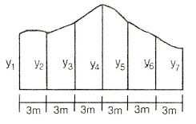
- 43m2
- 44m2
- 45m2
- 46m2
(정답률: 53%)
44. 단곡선에서 외할(E)을 구하는 공식은? (단, R:곡선 반지름, I:교각)
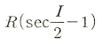
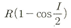
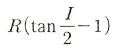
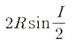
(정답률: 62%)
45. 노선을 선정할 때 유의해야 할 사항으로 옳지 않은 것은?
- 노선은 가능한 직선으로 하고 경사를 완만하게 한다.
- 토공량이 적고 절토와 성토가 균형을 이루게 한다.
- 절토 및 성토의 운반 거리를 가급적 길게 한다.
- 배수가 잘 되는 곳이어야 한다.
(정답률: 85%)
46. 지형측량의 단계를 측량 계획 작성, 골조측량, 세부측량, 측량 윈도 작성으로 구분할 때, 세부측량에 해당되는 것은?
- 자료 수집
- 등고선 작도
- 트래버스 측량
- 지물 측량
(정답률: 41%)
47. 지형의 표시방법에서 하천, 호수 및 항만 등의 수심을 측정하여 표고를 도상에 숫자로 나타내는 방법은?
- 채색법
- 점고법
- 우모법
- 등고선법
(정답률: 71%)
48. 반지름이 서로 다른 2개의 원곡선이 그 접속점에서 공통 접선을 이루고, 그들의 중심이 공통 접선에 대하여 같은 방향에 있는 곡선은?
- 반향곡선
- 복심곡선
- 단곡선
- 클로소이드곡선
(정답률: 73%)
49. 측점 A에서의 횡단면적이 32m2, 측점 B에서의 횡단면적이 48m2이고, 측점 AB간 거리가 10m일 때의 토공량은?
- 400m3
- 500m3
- 600m3
- 700m3
(정답률: 44%)
50. 다음 중 완화 곡선의 종류가 아닌 것은?
- 램니스케이트 곡선
- 클로소이드 곡선
- 3차 포물선
- 단곡선
(정답률: 70%)
51. 축척 1:50000의 지형도에서 주곡선의 간격은?
- 5m
- 10m
- 15m
- 20m
(정답률: 54%)
52. 그림과 같은 △ABC의 넓이는? (단, AB=4m, AC=5m)
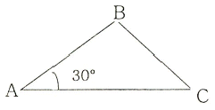
- 5m2
- 10m2
- 15m2
- 20m2
(정답률: 57%)
53. 인공위성을 이용한 범세계적 위치 결정의 체계로 정확히 위치를 알고 있는 위성에서 발사한 전파를 수신하여 관측점까지의 소요시간을 측정함으로써 관측점의 3차원 위치를 구하는 측량은?
- 전자파 거리 측량
- 광파 거리 측량
- GPS 측량
- 육분의 측량
(정답률: 88%)
54. GPS 시스템 오차 중 위성 시계 오차의 대략적인 범위로 옳은 것은?
- 0~1.5m
- 5~10m
- 10~30m
- 50~70m
(정답률: 64%)
55. 노선 경계와 면적을 산출하여 보상 문제의 자료로 이용되는 측량은?
- 용지 측량
- 종ㆍ횡단 측량
- 시공 측량
- 평면 측량
(정답률: 42%)
56. 곡선 설치에서 교점(I.P.)까지의 추가 거리가 150.80m이고, 곡선 반지름(R)이 200m, 교각(I)가 56° 32‘ 이었을 때 곡선 종점(E.C.)까지의 추가거리는?
- 107.54m
- 197.34m
- 240.60m
- 275.36m
(정답률: 34%)
57. 등고선을 측정하기 위해 어느 한 곳에 레벨을 세우고 표고 20m 지점의 표척 읽음값이 1.8m 이었다. 21m 등고선을 구하려면 시준선의 표척 읽음값을 얼마로 하여야 하는가?
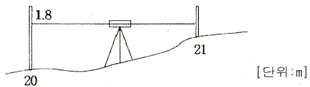
- 0.2m
- 0.8m
- 1.8m
- 2.9m
(정답률: 71%)
58. 다음 중 체적을 계산하는 방법이 아닌 것은?
- 단면법
- 점고법
- 등고선법
- 도해 계산법
(정답률: 70%)
59. 세변의 길이가 3m, 4m, 5m인 삼각형의 면적은?
- 6m2
- 8m2
- 10m2
- 12m2
(정답률: 64%)
60. GPS의 기본구성에서 3부문으로 나눌 때 이에 해당되지 않는 것은?
- 제어부문
- 우주부문
- 응용부문
- 사용자부문
(정답률: 64%)